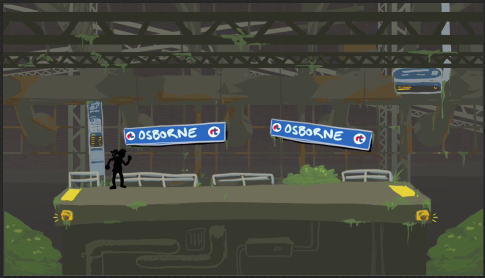
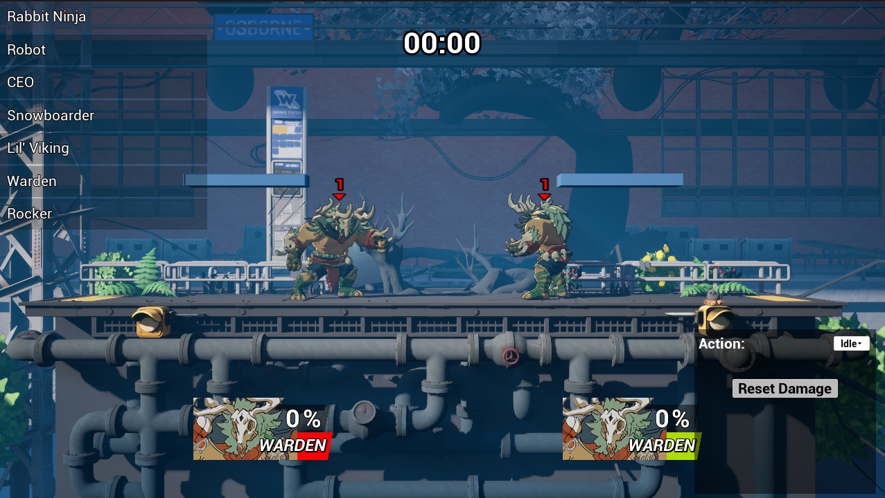

Role
Developer, Designer
Rift City Rebels is a Platform fighter set in a near-future Winnipeg. It is the final group project in my college program,
developed by 6 Developers and 12 Artists over the course of 4 months.
As this game is currently being developed, this page is still a work in progress.
Working with a team of this size on a larger project has been a very challenging but rewarding experience so far, with many opportunities to develop our skills in terms of keeping the scope of the project reasonable while still making something we are proud of.
Developer, Designer
2024
Unreal Engine 5
Platform Fighter
Blueprints
PC
Student Project (Group), Prototype
Each programmer was paired with an artist to develop and design one of the playable fighters in the game. The character concept I pitched is Warden, folk horror inspired Monster with nature themes. Together with the artist I was paired with, we further developed his look, moveset and personal history. His physique informed a heavy hitting playstyle with moves influenced by professional wrestling, with some more fantastical abilities added to showcase his plant based powers. To tie in his Folk Horror inspiration, his backstory positioned him as the "boogeyman" of the games world, punishing those who wander into his territory.

A major system I worked on for this project was the Game Manager systems, or 'Game Modes' in Unreal Engine. These consisted of two major Game Modes; the menu game mode and
the match game mode
The menu game mode handled all of the player selections in the menus leading up to the match itself. To handle this,
I created a struct to track which character the player selected, as well as any in game statistics that could be used for balancing, or the players score.
In the game mode, I then used these structs in a Map with the players controller ID as the key. This way, I could make sure the data in the struct
was assigned to the correct player. This map was then transferred to the Game Mode for the match once it started.
The Game Mode for the matches would track all of the players statistics. This included how many times they were knocked out, how many other players they knocked out, the damage they dealt, etc.
This information was very useful after playtests, as we could compare how much damage the characters dealt, who won the most, and any other relevant comparisons to inform game balance.
We also displayed some of this information to to the player after each match, so they could see how well they did.
One system I was in charge of developing was the in match camera. As the players are moving around the screen a lot, a system was developed to continually track their positions and calculate a center point for the camera to move towards. As the game allowed for up to 4 players in a fight, the camera needed to be able to zoom in and out based on the distance between them. This was handled by tracking the furthest distance between any two players to determine how far the camera needs to zoom in or out to keep everyone on screen. This introduced a new problem, where if the camera was zoomed out enough, it would show the sections of the level that were not intended for view. To resolve this, I set up two bounding boxes in the camera actor; one for the bounds the camera was allowed in when it was fully zoomed out, and one for when it was fully zoomed in. I would then calculate how much the camera was zoomed out on a scale of 0 to 1, and use that value to determine where between the two bounding boxes the camera needed to be constrained to.
To help with testing of certain abilites, a training mode was set up to allow us to set up an AI that would repeat a single action. This mode was set up with a UI element that would allow us to set which action they would repeat (Move, Jump, Attack, Parry), as well as the ability to change the player's or AI's character in the match.
